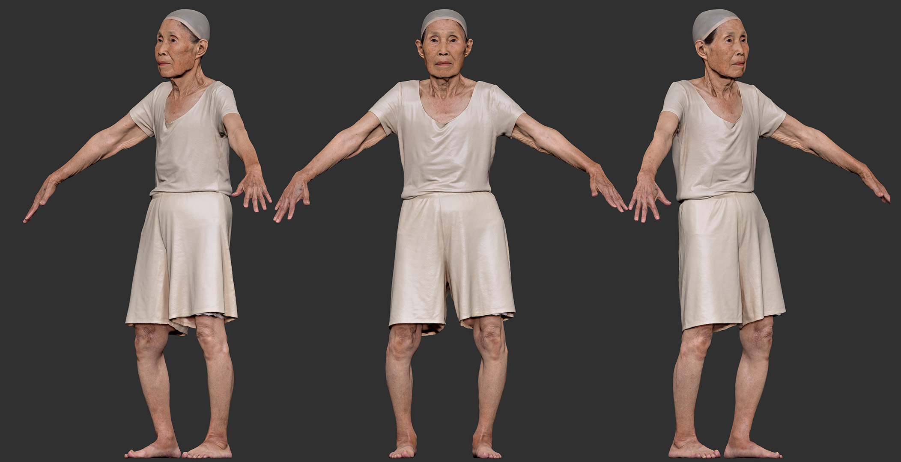
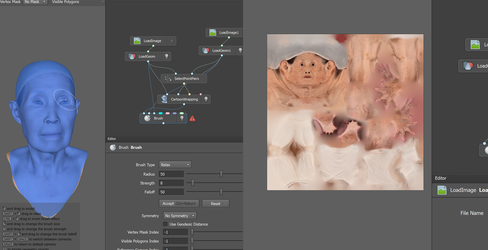
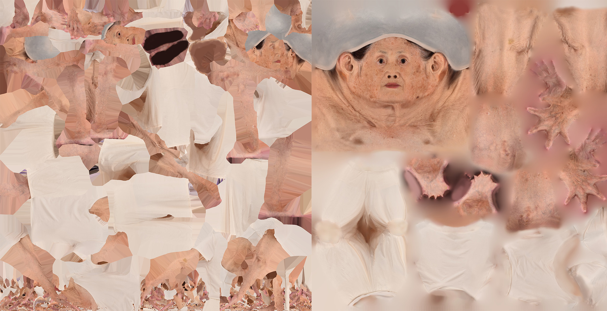
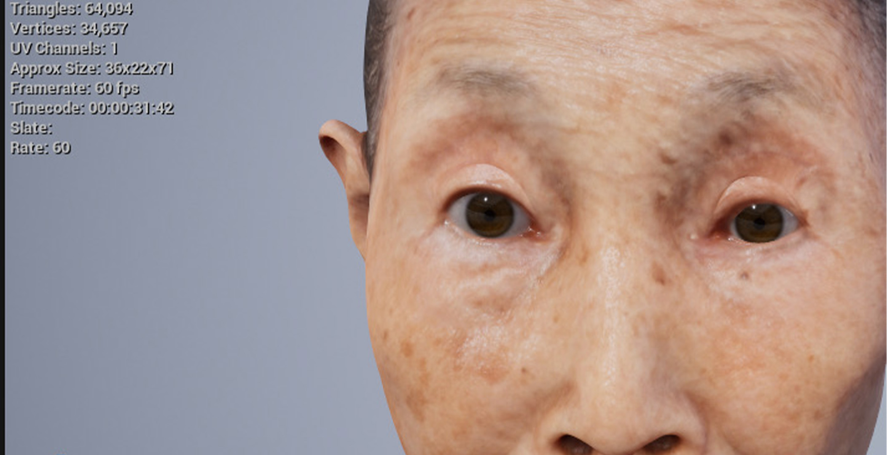

01 Diagnose the first build
Test a complete rigged, animated character and explicitly compare it with the source person's identity.
A real person's identity and performance, rebuilt for an Unreal character and extended into a VR presentation.

The original scan-based character could move in an early Unity feasibility build, but its likeness did not hold up. Production success required facial identity, age detail and recognizability to survive topology conversion, rigging, motion integration and real-time rendering.
I processed the external studio's delivered scan, prepared geometry in Maya and Wrap, rebuilt a MetaHuman-compatible character, corrected eye and look-development issues, cleaned body performance with MotionBuilder / Maya, retargeted motion and aligned separately recorded facial material in Unreal Sequencer. For Jooan VR I adapted staging and added Niagara hand-trail treatment.
Test a complete rigged, animated character and explicitly compare it with the source person's identity.
Prepare scan-derived geometry and texture detail; use Wrap correspondence to target MetaHuman topology.
Clean OptiTrack body motion and supplemental captures with MotionBuilder / Maya and HumanIK workflows.
Retarget prepared body material and align facial takes in Unreal Sequencer. Review eye placement and performance continuity.
Review the completed character at body scale, adapt camera movement, stage the scene, and evaluate Niagara ribbon feedback.




An animated prototype that loses the subject's identity is not a finished character. The pipeline was revised around the original scan instead of polishing the inadequate prototype.
Body, hands and face were acquired through different routes. Cleanup, timing, and final presentation cannot be treated as a single raw import.
Headset review exposes gaze, camera comfort, character scale and proximity issues that are easy to miss in a flat cinematic view.
The public material demonstrates MetaHuman reconstruction, DCC cleanup, Unreal retargeting and Sequencer-based performance. It does not establish an independently shipped UE5 networked game locomotion state machine, a production Animation Blueprint library, or a quantified animation profiler benchmark.
See also: original, expanded project archive ↗